Work Experience
Project 1: Petty Cash Application
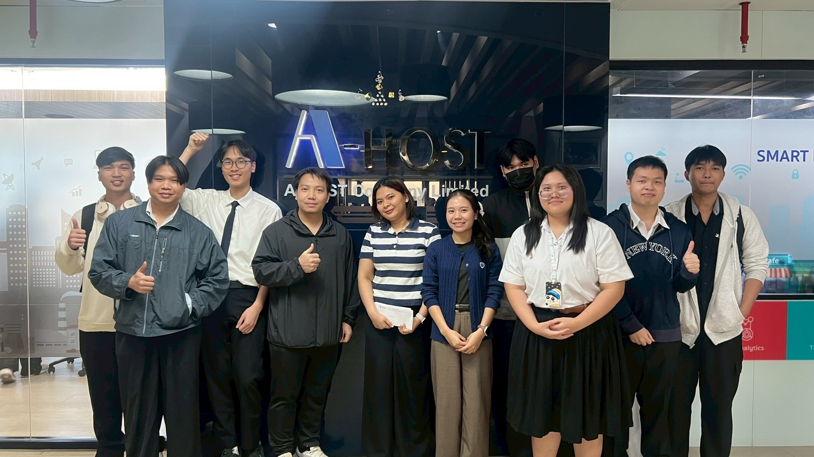
- UI/UX Implementation: พัฒนาแอปพลิเคชัน Petty Cash ด้วย Power Apps โดยแกะดีไซน์จาก Figma เป็น Functional App
- User Experience: ออกแบบ Component เช่น Gallery และ Popup ให้ใช้งานง่ายตาม Flow ธุรกิจ
- Requirement Matching: ปรับปรุงระบบตาม Feedback เพื่อตอบโจทย์การเบิกจ่ายจริงขององค์กร
Project 2: Asset Audit System
- Database Management: เขียน Stored Procedure บน SSMS เพื่อจัดการ Data Versioning ที่ซับซ้อน
- System Integration: สร้าง Flow บน Power Automate เชื่อมต่อ API (D365) เพื่อดึงข้อมูลสินทรัพย์
- Data Handling: พัฒนาการดึงข้อมูลพักใน Collection เพื่อเพิ่มประสิทธิภาพในการเรียกดู
Project 3: Quality Assurance (Tester)
- Manual Testing: ดำเนินการทดสอบระบบแบบ Full Loop Test เพื่อจำลองการใช้งานจริง
- Bug Reporting: วิเคราะห์และรายงาน Bug ให้กับพี่เลี้ยงเพื่อปรับปรุงคุณภาพระบบ
- Technical Writing: จัดทำและแก้ไข User Manual เพื่อความเข้าใจของผู้ใช้งาน
Hackathon & Competitions
Innovative Application for Smart Life: พัฒนา AI ตรวจจับรอยแผลจากแมลงกัดต่อย เพื่อลดภาระค่ารักษาพยาบาลและช่วยประเมินอาการเบื้องต้นสำหรับนักท่องเที่ยวและผู้ที่อยู่ในพื้นที่เสี่ยง
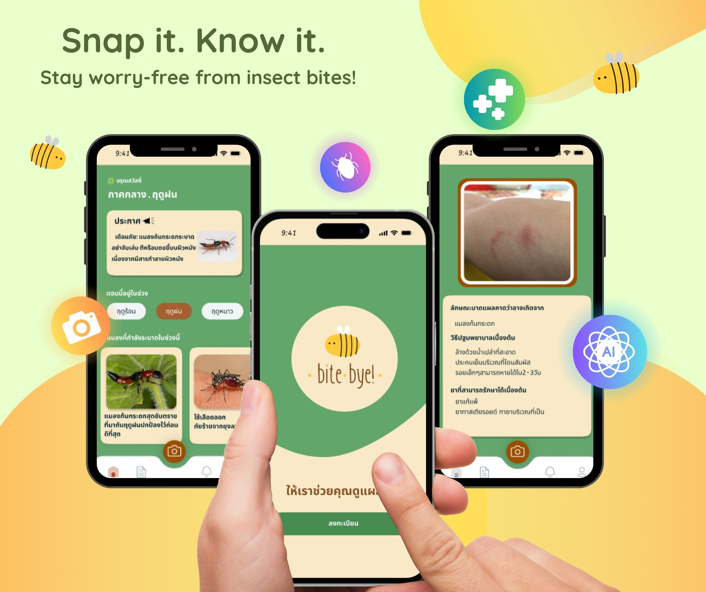
My Role: AI Model & Web Development
- Model Development: พัฒนา AI สำหรับเปรียบเทียบภาพรอยแผล โดยใช้ Dataset จาก Kaggle มาวิเคราะห์และคัดเลือก
- Model Training: ดำเนินการ Train Model บน Google Colab พร้อมปรับแต่ง Parameter ให้เหมาะสมกับลักษณะของรอยโรค
- Deployment: สร้าง Web Application ด้วย Streamlit เพื่อให้ผู้ใช้งานสามารถอัปโหลดภาพและรับผลวิเคราะห์ได้ทันที
Video Demonstration
International Experience
TNI - SIT gPBL : โครงการแลกเปลี่ยนเรียนรู้เชิงปฏิบัติการระดับนานาชาติ ร่วมกับนักศึกษาจาก Shibaura Institute of Technology (SIT) ประเทศญี่ปุ่น เพื่อพัฒนาโปรเจกต์เกมในรูปแบบ Virtual Reality (VR)
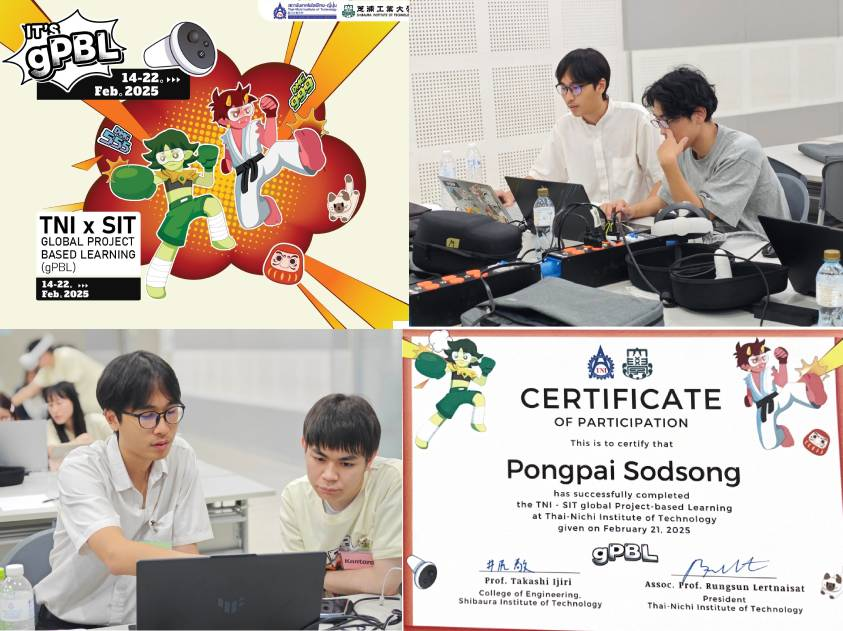
Project Overview & Challenges
- VR Development: ร่วมกันออกแบบและพัฒนาเกม VR ด้วย Unity โดยเน้นการสร้าง Interactive Experience ที่น่าตื่นเต้น
- Language & Coding Barrier: เผชิญกับความท้าทายด้านการสื่อสารและสไตล์การเขียนโค้ดที่แตกต่างกันระหว่างนักศึกษาไทยและญี่ปุ่น
- Communication Strategy: ปรับตัวโดยใช้ภาษาอังกฤษเป็นหลักในการอธิบาย Logic ของโค้ด และใช้เครื่องมือ Visual ช่วยลดความคลาดเคลื่อนในการสื่อสาร
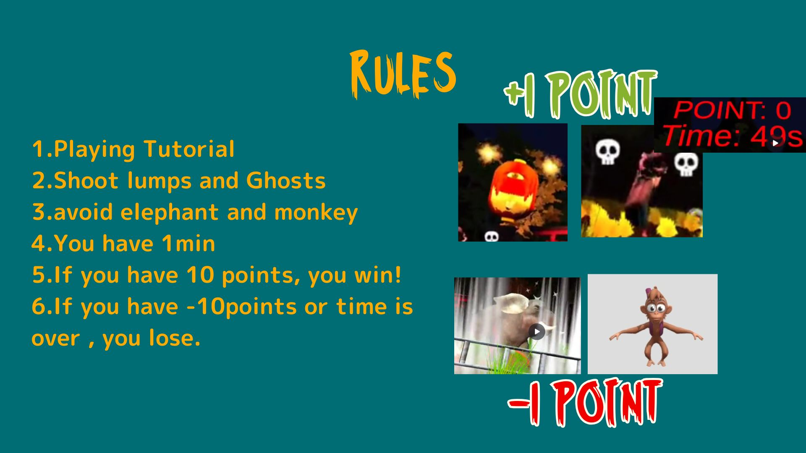
Video Demonstration
UX Research & Inclusive Design
Final Project:
การออกแบบแอปพลิเคชันเพื่อส่งเสริมคุณภาพชีวิตของผู้พิการทางการได้ยิน
โดยเน้นกระบวนการทำ User Research
และการออกแบบที่ตอบโจทย์ความต้องการที่แท้จริง
Prototype
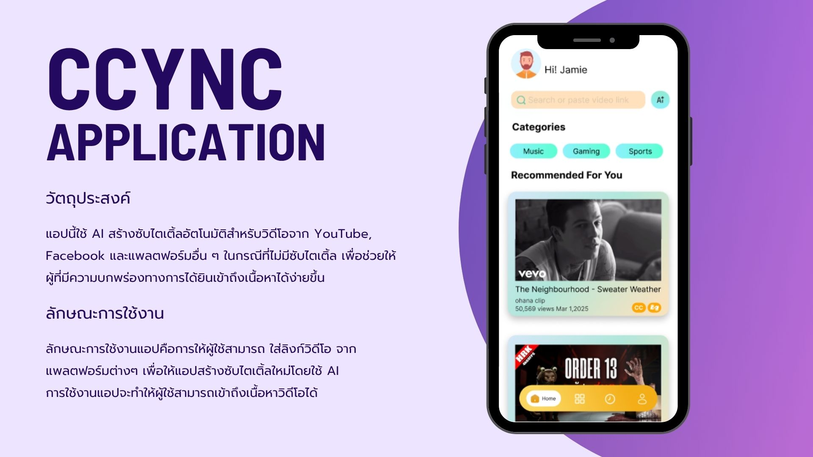
My Role & Contributions
- User Interview: ร่วมสัมภาษณ์และเก็บข้อมูลจากผู้เชี่ยวชาญ (ศิษย์เก่า) ที่ทำงานใกล้ชิดกับผู้พิการทางการได้ยิน เพื่อหา Insight ที่แท้จริง
- Design System: วางโครงสร้าง Design System ให้กับ Prototype เพื่อความสม่ำเสมอและความเป็นมืออาชีพของงานออกแบบ
- UI Refinement: ปรับปรุง Prototype ด้วยหลักการ Pixel Perfect เพื่อให้งานออกแบบมีความแม่นยำและสมบูรณ์ที่สุดก่อนนำไปทดสอบ
.jpg)
.jpg)
Key Research Insights
• Psychological Impact: ผู้พิการทางการได้ยินมักมีความเปราะบางด้านจิตใจร่วมด้วย เนื่องจากการเติบโตในสังคมแบบปิด
• Social Barrier: มีความกังวลในการใช้ชีวิตในสังคมทั่วไป และมักจะเลือกสื่อสารภายในกลุ่มคนที่มีลักษณะเดียวกัน
• App Usage: ใช้งานแอปทั่วไปได้ปกติ แต่จะมีปัญหาอย่างมากกับแอปกลุ่มมัลติมีเดีย (เช่น YouTube) ที่ไม่มีฟีเจอร์รองรับการเข้าถึงข้อมูลที่ชัดเจน
Content Creation & Animation
Overview: ดูแลการผลิตคอนเทนต์แอนิเมชันแบบครบวงจร ตั้งแต่การวางกลยุทธ์จนถึงการวิเคราะห์ข้อมูลหลังการเผยแพร่ เพื่อสร้างการเติบโตของ Community บนแพลตฟอร์ม Social Media
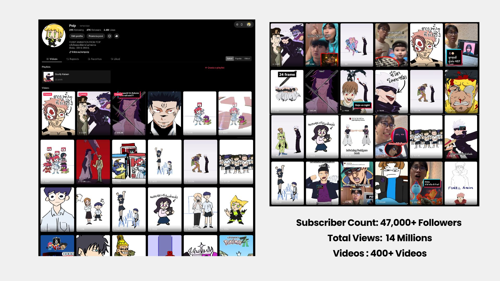
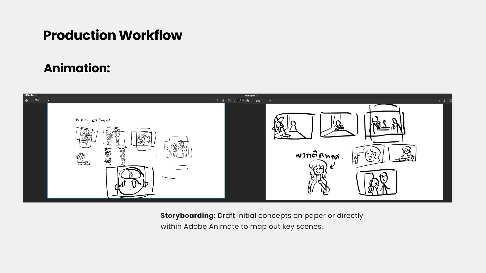
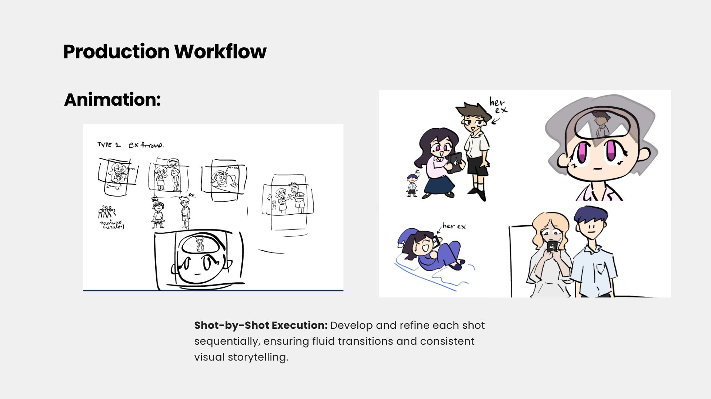
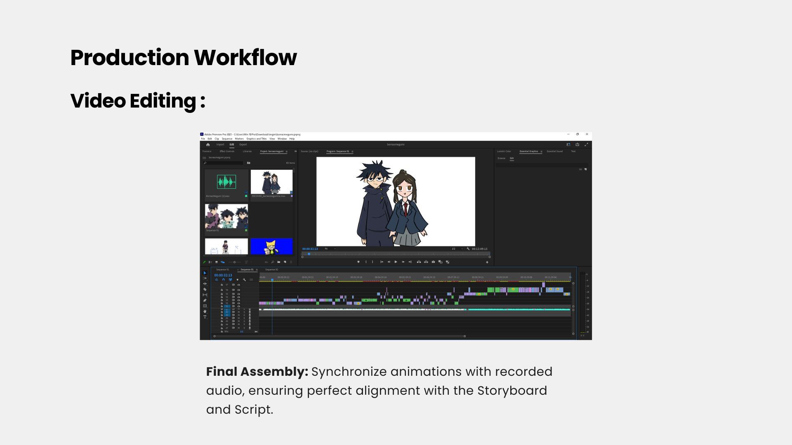
Key Contributions
- Content Production: บริหารจัดการการผลิต 2D Animation บน YouTube & TikTok ตั้งแต่ต้นจนจบ จนมียอดผู้ติดตามมากกว่า 40,000+ followers
- Strategy & Lifecycle: รับผิดชอบ Creative Lifecycle ทั้งหมดด้วยตัวเอง ตั้งแต่การเขียนบท (Scripting), ทำ Storyboard, ตัดต่อ ไปจนถึงการ Deployment
- Performance Optimization: เพิ่ม Viewer Retention ด้วยเทคนิค "Hook" และ "Cliffhanger" พร้อมทั้งวิเคราะห์ค่า CTR/AVD เพื่อนำมาปรับปรุงกลยุทธ์คอนเทนต์
- Technical Versatility: ผลิตคอนเทนต์ทั้งแนวตั้งและแนวนอน โดยรักษามาตรฐานการทำงานที่เข้มงวดและส่งงานตรงตามกำหนดเวลาเสมอ
Data-Driven Results
• Community Growth: เติบโตอย่างต่อเนื่องสู่ 40,000+ Followers
• Engagement Focus: ใช้ Data Analysis (CTR/AVD) เพื่อทำความเข้าใจพฤติกรรมผู้ชมและปรับจังหวะการเล่าเรื่องให้ดึงดูดที่สุด
E-Commerce & Community Platform
Project Concept: แพลตฟอร์มศูนย์กลางสำหรับผู้เล่นการ์ดโปเกม่อนในไทย ที่ช่วยแก้ปัญหาเรื่องการเช็คราคาการ์ดที่ผันผวน และเป็นแหล่งรวบรวมข้อมูลเด็ค (Deck List) เพื่อสร้าง Community ที่แข็งแกร่ง
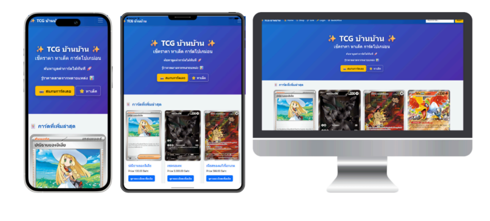
Key Features & Responsibilities
- Price Tracker: พัฒนาระบบเช็คราคากลางของการ์ดโปเกม่อน เพื่อให้ผู้ซื้อและผู้ขายมีมาตรฐานอ้างอิงที่เชื่อถือได้
- Deck Database: รวบรวมและจัดการข้อมูลเด็คยอดนิยม (Meta Decks) ช่วยให้ผู้เล่นใหม่สามารถศึกษาและจัดเด็คตามได้ง่ายขึ้น
- Search Optimization: ออกแบบระบบ Search และ Filter ที่ละเอียด (เช่น ค้นหาตามชื่อ, ชุดการ์ด, หรือความหายาก) เพื่อประสบการณ์การใช้งานที่ดีที่สุด
- Inventory Management: วางโครงสร้างหลังบ้านในการจัดการสต็อกการ์ดและข้อมูลรายละเอียดการ์ดแต่ละใบ
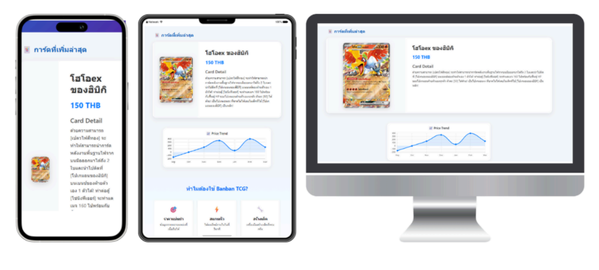
User-Centric Solution
• Transparency: สร้างความโปร่งใสในตลาดการ์ดผ่านการแสดงราคาที่อัปเดต
• Accessibility: ออกแบบมาเพื่อให้ผู้เล่นทุกระดับสามารถเข้าถึงข้อมูลเทคนิค (Deck List) ได้ในที่เดียว